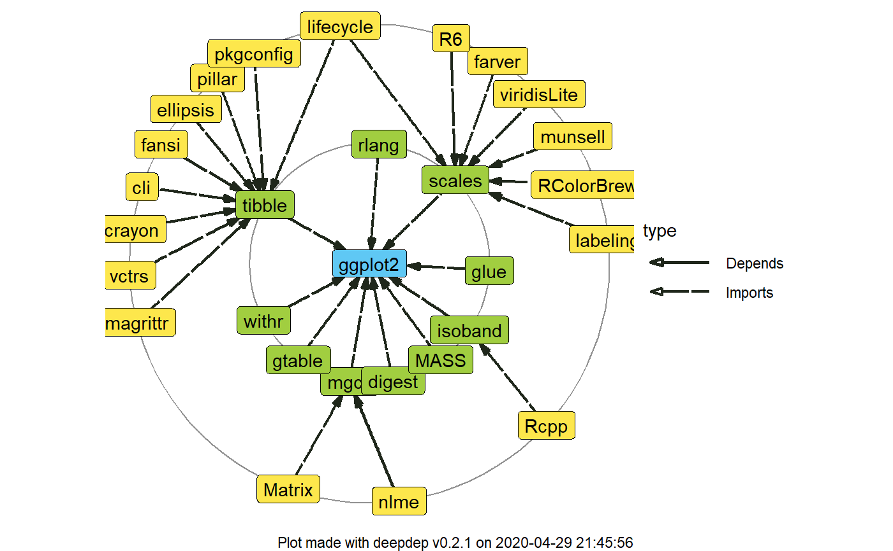

This function is an ultimate wrapper for get_dependencies. It inherits all of the arguments and
allows to recursively search for the dependencies at the higher level of depth.
deepdep( package, depth = 1, downloads = FALSE, bioc = FALSE, local = FALSE, dependency_type = c("Depends", "Imports") )
| package | A |
|---|---|
| depth | An |
| downloads | A |
| bioc | A |
| local | A |
| dependency_type | A |
An object of deepdep class.
#> origin name version type #> 1 ggplot2 digest <NA> Imports #> 2 ggplot2 gtable >= 0.1.1 Imports #> 3 ggplot2 lazyeval <NA> Imports #> 4 ggplot2 MASS <NA> Imports #> 5 ggplot2 mgcv <NA> Imports #> 6 ggplot2 reshape2 <NA> Imports# \donttest{ dd_2 <- deepdep("ggplot2", depth = 2, downloads = TRUE) plot_dependencies(dd_2, "circular")# }